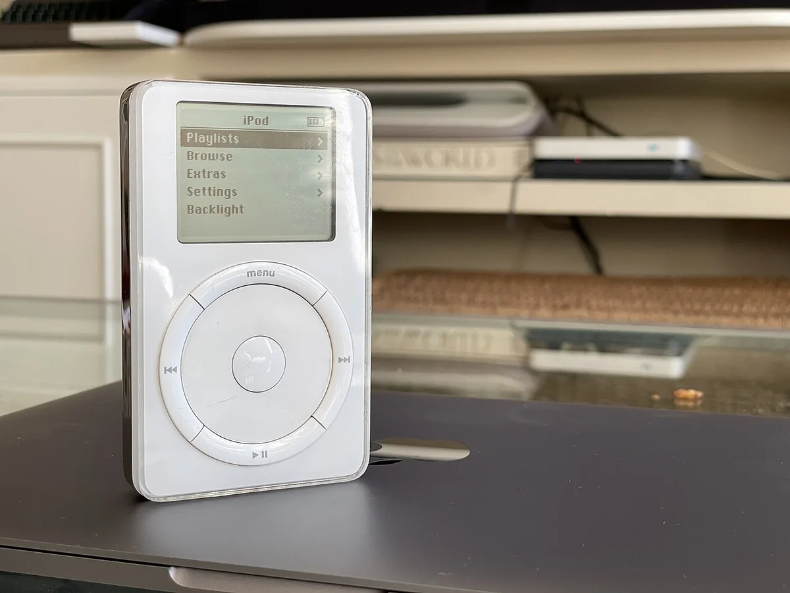

La publicidad puede ser creativa.
Puede sorprender.
Puede hacer reír.
Puede utilizar metáforas.
Puede ser visualmente extraordinaria.
Pero existe una condición previa:
la gente tiene que entenderla.
Un error frecuente es comenzar intentando crear algo “creativo” y terminar produciendo un titular poético, un concepto extraño o una imagen visualmente atractiva cuyo significado solo comprende el equipo que la creó.
La creatividad debería ayudar a que una idea sea:
más interesante, más memorable o más atractiva.
No debería convertirla en un acertijo.
Cuando Apple presentó el primer iPod en 2001, el aparato podía describirse mediante muchas especificaciones técnicas.
Tenía 5 GB de almacenamiento, FireWire y diferentes formatos de audio.
Pero Apple concentró su lanzamiento alrededor de una idea que cualquiera podía comprender:
“1,000 canciones en tu bolsillo.”

El titular aparecía en el propio comunicado oficial de lanzamiento.
La frase seguía siendo creativa.
Pero sobre todo era clara.
Convertía una característica técnica —5 GB— en una consecuencia comprensible para el consumidor.
En cada publicidad debe quedar claro:
¿Qué queremos que entienda el estudiante?
Una vez definida esa idea, puede buscarse una forma creativa de expresarla.
No al revés.
Mostrar la publicidad durante unos segundos a una persona que no haya participado en su creación y preguntar:
“¿Qué entendiste?”
Si necesita una explicación posterior, todavía falta claridad.